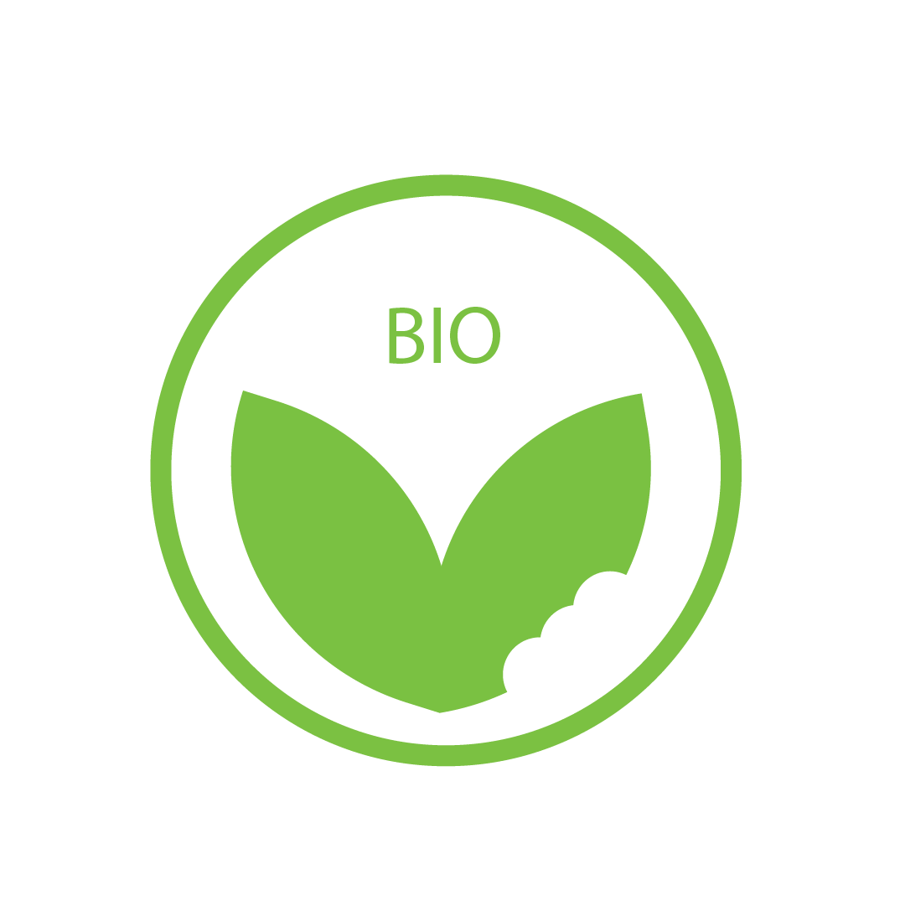

Tip vijf

Eet biologisch
Ecologisch eten is de meest voedzame vorm van eten omdat in die groenten en fruit de meeste voedingsstoffen zitten. Dit is echter niet altijd mogelijk en je kan ook klein beginnen door eens bij een biologische supermarkt je boodschappen te doen, of gewoon bij de bio-afdeling in je gebruikelijke supermarkt!